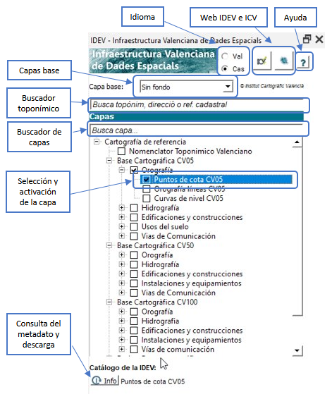
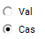
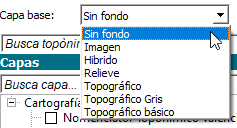
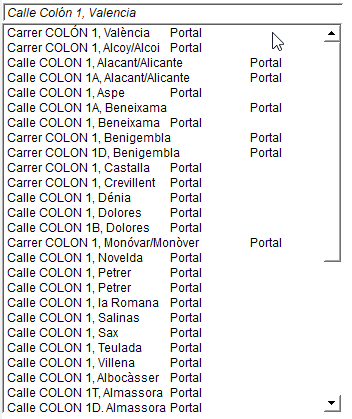
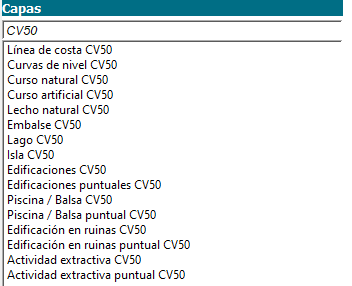
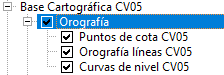
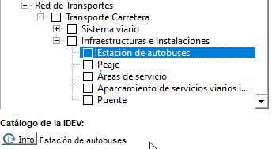

El complement permet visualitzar i explotar diferents capes d'informació geogràfica provinents de la IDEV. La interfície permet a l'usuari fer una cerca toponímica, cerca de capes, càrrega i descàrrega de serveis cartogràfics i consulta del catàleg de la IDEV per a cada capa.
Consta d'un panell principal des del qual s'accedeixen a totes les funcionalitats:

Selecció de l'idioma: A través de dos “radio buttons” es tria l'idioma de la interfície, podent ser castellà o valencià. En seleccionar l'un o l'altre es tradueix tota la interfície.

Enllaç a la web de la IDEV i de l'ICV: A través d'aquests dos botons s'accedeix la web de la “Infraestructura Valenciana de Dades Espacials” i de “l’Institut Cartogràfic Valencià”.
Ajuda: A través d'aquest botó s'obri el document d'ajuda en el navegador.
Selecció
de capes base: A
través del desplegable de “Capa
base”
se selecciona la capa base que es vulga
inserir en el projecte de QGIS. Les capes seleccionades es carregaran
al final de la taula de continguts en el panell de “Capes”.

Cercador toponímic: Per a poder buscar per text lliure un topònim, una adreça postal o una referència cadastral. Per davall del text d'entrada es mostra una llista amb els resultats a mesura que l'usuari escriu el text de cerca (s'activa a partir de teclejar el tercer caràcter). Fent clic sobre qualsevol resultat del llistat, se centra l'enquadrament en la zona del topònim, parcel·la cadastral o adreça postal.

Cercador de capes: En aquest quadre de text s'introdueix el patró de cerca per a localitzar una capa (pel seu nom) dins de l'estructura d'arbre. Es mostra en un llistat les possibles coincidències i prement sobre la capa que es vulga localitzar, aquesta es mostra en la seua localització dins de l'arbre amb un ombreig gris.

Selecció i activació de les capes: Podem carregar una capa en el projecte de QGIS activant la “casella de selecció” que hi ha al costat del nom d'aquesta. Una vegada activat es carregarà amb el mateix nom que apareix en l'arbre en la part superior de la taula de continguts en el panell de “Capes”. Per a descarregar la capa és tan senzill com desactivar la “casella de selecció”, automàticament es descarregarà de la taula de continguts.
Es poden activar o desactivar diverses capes alhora prement sobre el node pare que conté un grup de capes, en la següent figura s'aprecia com prement sobre el node “Orografia” s'activen les tres capes que pengen d'aquest node.

D'igual manera, prement sobre el nom d'una capa, veiem com se selecciona (és la capa que té el focus i es representa amb un contorn blau per davall). És necessari que una capa està seleccionada per a poder consultar la seua metadada o informació de descàrrega.
Catàleg de la IDEV: Una vegada s'ha seleccionat una capa de l'arbre, s'activa el botó de “Info” i s'informa el costat del mateix del nom de la capa que pot ser consultada la seua informació. En la figura veiem com està seleccionada la capa “d’Estació d'autobusos” i com és possible enllaçar amb el catàleg de la IDEV prement sobre “Info”:

Per a poder consultar aquesta informació no és necessari que la capa estiga carregada en el projecte, únicament es requereix que estiga seleccionada. Se'ns presenta en el navegador la interfície del catàleg de la *IDEV amb la informació referent a aquesta capa.